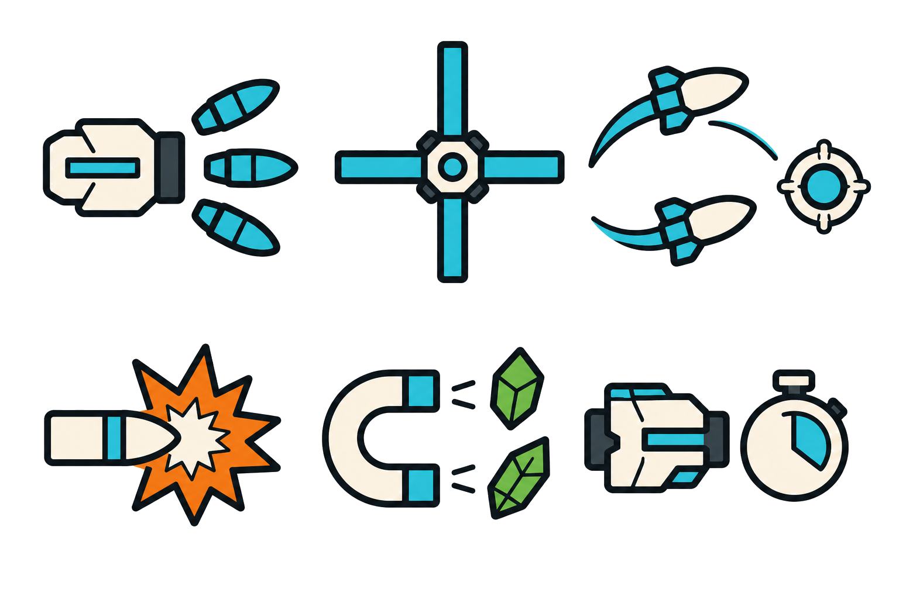
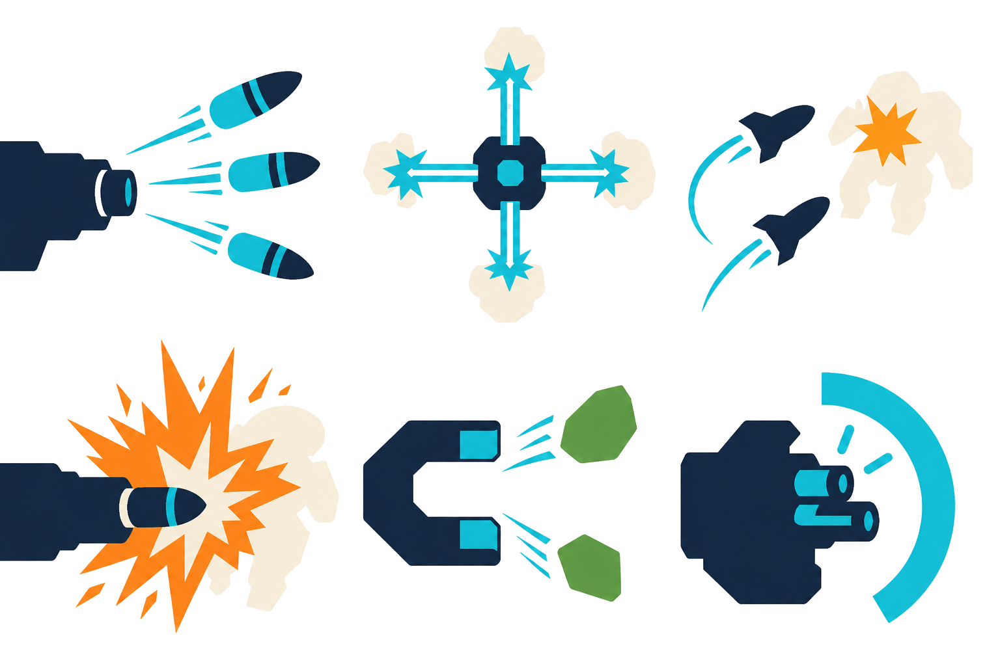
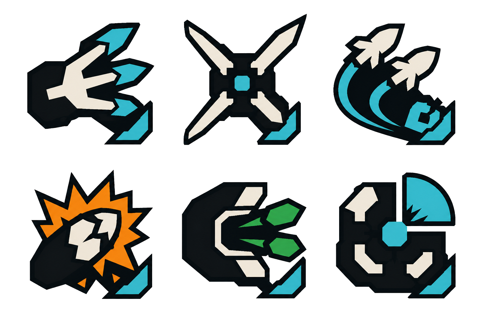

A — Flat Signal Pictogram
가장 보편적인 사물 기호, 굵은 외곽선, 한 개의 주 대상과 한 개의 보조 의미.

스타일 체계만 비교하기 위한 review-only 시트입니다. 게임이나 production asset에는 적용되지 않았습니다.
가장 보편적인 사물 기호, 굵은 외곽선, 한 개의 주 대상과 한 개의 보조 의미.

실제 전투 결과 한 장면을 큰 평면 실루엣으로 보여주는 방식.

불규칙한 절단면과 음각 여백을 공통 문법으로 쓰는 엠블럼 방식.
